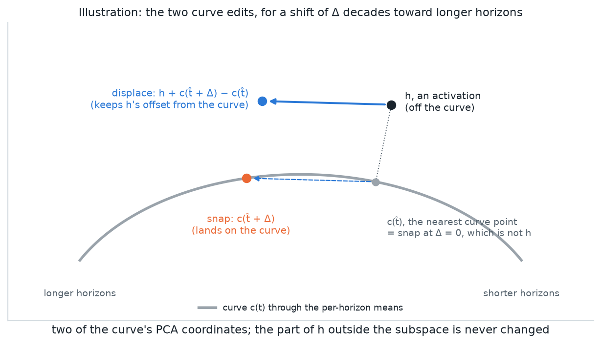
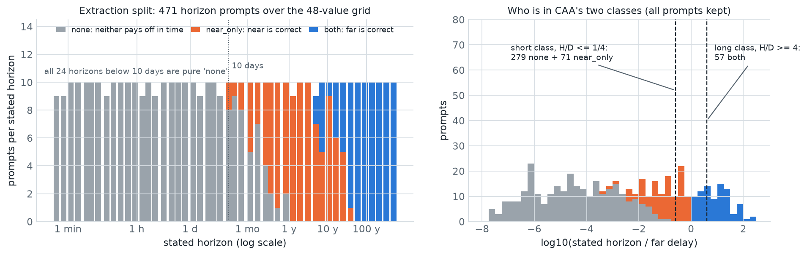

What extraction hands over, and how to use it
Extraction turns the T0 prompt bank and one model's activations into steering methods: a linear direction, a manifold curve, two concept controls and random directions. This page describes each method, how to apply it inside the model during generation, how it is packaged, what has been checked, and what is still open. It answers the evaluation design item by item.
The hand-over on one screen
check_hook --method: the method behaves in this model's real generation.What the evaluation team gets
- Five methods per fit:
caa,curve-snap,curve-displace, and the concept controlsrewardandchoice(§05). - An edit hook that works inside batched
generate(), with a replay readout and a per-token size record for matched nulls (§06). - Every item I1–I9 of the evaluation design that applies, in machine-readable form; I7 does not apply because all methods are closed form (§08).
Method.refitfor label-shuffled nulls, held-out horizons and within-order refits (§07).
What to watch
- CAA's classes differ in which answer is correct, not only in horizon (§09).
curve-snapat Δ = 0 is not the identity, and it changes generations (§05).- Gemma generation is slow: about 15 GPU-hours for the full baseline, not 2.5. Long replies and one runaway reply per batch explain most of it (§11).
- Asked of you, and since answered: held-out horizons, null families and K, whether
EditContextis enough, and the preferred host (§13).
What exists now, and what doesn't yet
Two packages
prompt_bank/ builds the bank, has a second model check every prompt, and runs the model unsteered once over the bank. It is the official generator for the experiments. steering/ reads activations from that run, fits the methods, packages them, and applies them inside the model.
For whom
The evaluation pipeline should run a method without knowing how it was built [eval §3]. Every bundle carries what it is, how to apply it, and what it was fitted on, with hashes.
What is missing
No full Gemma 4 31B run yet. The pipeline has run end to end on Gemma only for 16 prompts on a rented A100. Generation speed is the blocker (§11).
| Part | State | Evidence |
|---|---|---|
Bank t0_s0 (700 prompts), checker, baseline runner | on main | prompt_bank/README.md |
| Extraction, fitting, diagnostics | on main | steering/README.md |
| Torch edits, generation-time hook, replay readout | on main | tests; Qwen3.5-0.8B/2B; Gemma 4 31B (§10) |
Bundles, Method.refit, search log | on main | tests; Qwen3.5-2B bundles checked in-model |
Hook gate tools/check_hook.py | on main | passed on Qwen3.5-0.8B, Qwen3.5-2B, Gemma 4 31B |
| Upload scripts (Hugging Face, GCS) | on main | tests; two real Hugging Face uploads, verified |
Rented-GPU run script tools/vast_smoke.sh | on main | one A100 run (§11) |
Hook fix for generation without padding; single-token edits; gate option --positions | on main | tests; Qwen3.5-2B (README §6, §10) |
Horizon site (activations at the tokens that state the horizon); fit.py --draws | on main | tests; Qwen3.5-0.8B/2B (README §6, §8.2) |
| Practice hand-over: Qwen3.5-2B, thinking off, all 700 prompts | published on Hugging Face | README §12 |
| Shared random draws | built by the evaluation team, on main | evaluation/shared_draws.py |
| Full Gemma 4 31B baseline, fit and bundles | not run | throughput and decoding, §11 |
Terms added to the evaluation design's glossary
Terms defined in [eval §2] (residual stream, layer, site, typical norm, CAA, curve slide, push vs target, replay readout) mean the same here.
Data
- Bank
t0_s0 - The T0 bank at seed 0. The extraction split has 500 prompts: 471 with a horizon plus 29 no-horizon twins. The verification split has 200: 100 boundary items, each in both option orders.
- uid
- A prompt's identifier:
x0042, its twinx0042-null,v017-far-first. - Regime
- Which options pay off within the stated horizon:
none,near_only,both;no_horizonwhen there is no CONSTRAINT line. A payout exactly at the horizon counts. - H/D
- Stated horizon over the far option's delay.
- Grid value · log-time t
- The horizon on the 48-point grid (30 s to 500 y), before any unit rewrite. t is log10 of it in days.
- Baseline run
- One unsteered pass of a model over the bank (thinking on; greedy until 2026-11-22, seeded sampling by default since). Every reply's exact token ids are stored (
generated_ids).
Extraction
- Label · prelabel site
- The generated token carrying the label character of the model's own "I choose: b)", and the token before it.
- Replay
- One teacher-forced pass over the prompt plus the stored reply, up to the label. Extraction generates nothing.
- Replay margin
- At the token before the label: the logit of the generated label minus the best other logit. A faithful replay gives ≥ 0, up to bf16 near-ties (0.125).
- bf16
- The 16-bit floating-point format the model runs in.
Methods and hand-over
- Method · request x
- One way of editing the residual stream. Push methods take a strength (a fraction of the typical norm). Target methods take a shift in decades of log-time.
- Bundle
- One directory per method, format
steer-method/1(§07). - Edit · EditContext
- The torch object computing
edit.delta(h, x, ctx).ctxgives each token's role (pad / prompt / generated) and position, the edit mask, and optional per-row facts. - Positions
- Where an edit applies:
all,prompt,generated, or a callable. Padding is never edited. - Hook gate
tools/check_hook.py: pass/fail check of the hook on one model's real generation.- Search log · code commit
search.jsonlholds one line perfit.pyrun, whatever its outcome. The code commit is recorded in every output, with-dirtyif tracked files understeering/orprompt_bank/had uncommitted changes.
Stages, outputs, and what each one refuses
Every stage records its settings, its inputs' SHA-256 hashes and the code commit. Each refuses to overwrite, and refuses inputs that don't match.
| Stage | Command | Writes | Needs | Refuses |
|---|---|---|---|---|
| Baseline | baseline.py --bank data/t0_s0 | runs/<model>__<bank>/ | GPU holding the model in bf16 | resuming with other settings or another bank |
| Extract | extract.py --bank … --run … --layers 38 | activations/<run>/: index, skipped, L38_label.npy, L38_prelabel.npy | same GPU, minutes | another bank; replies without token ids |
| Fit | fit.py --activations … --bank … --layer 38 | fits/<run>/<name>/L38_label/; appends search.jsonl | CPU, seconds | activations whose hashes don't match |
| Bundle | bundle.py --fit … --activations … | methods/<model>/<method>__…/ | CPU | activations other than the fit's |
| Gate | tools/check_hook.py --method <bundle> | nothing; exit code 0 or 1 | GPU | — |
| Publish | tools/upload_hf.py · upload_gcs.py | remote copy and SHA256SUMS | network | a non-empty destination; credential-like files; symlinks |
Commands run from the package directory (prompt_bank/ for the baseline, steering/ for the rest). runs/, activations/, fits/ and methods/ are git-ignored and published with the upload scripts.
Layer, sites, units and signs
The residual stream after decoder block L, counting from 1: hidden_states[L]. Headline: layer 38 of Gemma 4 31B's 60. The block list is found as the one ModuleList with one entry per layer. In Gemma 4 it is …language_model.layers, so code that hard-codes model.model.layers (as in Qwen) misses it.
Gemma 4 ends its thinking with <channel|>, Qwen3/3.5 with </think>. The marker is found in the tokenizer, and a model family with neither is refused. The label site is in the answer, after the marker.
An edit adds x × typical_norm × direction. Directions are unit vectors, and the typical norm (the mean activation norm at the layer and site) is in the bundle. Every push method at the same x has the same norm.
x is in decades of log10(horizon in days), measured from each token's own t̂. t̂ + x is clamped to the curve's range, which is stored in the bundle.
+x means longer horizons for caa and the curve methods, larger reward multipliers for reward, and "chose far" for choice. Each bundle states its own sign.
Default positions: all, as in the report. This default is under review: for the curve methods it was an oversight, and an edit at the label token alone cannot change the choice (README §4, §6). Edits compute in float32 and cast back once. A zero request gives an exactly zero displacement.
␣a) but not into a digit. So the prelabel token is : for a)/b) prompts and ␣ for 1)/2) prompts. Any C1 analysis at the prelabel site compares different tokens across label styles.Five methods per fit, plus random directions
| Method | Kind | Edit | What it is | Request x |
|---|---|---|---|---|
caa | push | LinearEdit | mean of H/D ≥ 4 prompts minus mean of H/D ≤ 1/4 prompts, unit-normalised | strength |
curve-snap | target | CurveEdit(mode="snap") | replace the subspace part of h with c(t̂ + x) | shift, decades |
curve-displace | target | CurveEdit(mode="displace") | add c(t̂ + x) − c(t̂) | shift, decades |
reward | push | LinearEdit | concept control: reward multiplier ≥ 25 minus ≤ 5 | strength |
choice | push | LinearEdit | concept control: chose far minus chose near | strength |
The fit also stores 100 isotropic random unit vectors (seed 0); these are not bundled. The curve:
- runs through the per-horizon means, in their top 4 principal components;
- is smoothed with a Gaussian-kernel local-linear smoother, bandwidth 0.3 decade;
- is stored as a 2001-point polyline; t̂ is the nearest polyline point.

tests/test_manifold.py, against 0.0017 for snap.On Qwen3.5-2B (thinking off, 8 prompts), curve-snap at x = 0 changed 7 of 8 replies, while curve-displace and caa at x = 0 changed none. The offset snap removes is large enough to change generations. This is plumbing scale, not evidence about Gemma, but the control is not a formality.
The generation-time hook, and what it guarantees
from pbank.local_model import LocalChatModel
from steer.methods import load
from steer.hooks import steering, replay_logits
lcm = LocalChatModel("google/gemma-4-31B-it")
m = load("methods/gemma-4-31B-it/caa__gemma-4-31B-it__t0_s0__default__L38_label") # checks every file's SHA-256
with steering(lcm.model, m.edit, x=0.1, layer=m.layer, positions=m.positions):
replies = lcm.generate(texts, thinking=True, max_new_tokens=8192)
logits = replay_logits(lcm.model, prompt_ids, answer_ids, m.edit, x=0.1, layer=m.layer) # one teacher-forced pass
A pre-hook works out each token's position in every pass, from the first of cache_position, attention_mask and position_ids that generate() passes. The pass starting at position 0 is the prompt, later passes are generated tokens, and mask zeros are padding. This works inside batched, left-padded generate() with the key-value cache. At batch 1 it works since the 2026-11-19 fix: before it, prompt and generated edits hit the wrong tokens there (README §6).
The displacement is computed everywhere and applied through a mask (torch.where), so unedited positions keep their exact bits.
x may be one value per row. rows=[…] passes facts such as uid or stated horizon into ctx.rows. CAA and the curve ignore them, but edits that need them (centroid substitution, horizon-token-only edits) keep the same signature.
record=[] collects the context and the L2 norm of the applied displacement per token, so random controls can match a method's size token by token (N1, N6).
Run tools/check_hook.py (--method <bundle> to check a bundle). Checks: (1) the zero edit is exact; (2) roles and positions are right; (3) a strong edit has an effect; (4) the method at x = 0 reproduces the unhooked output. curve-snap is exempt from (4) and only reported. Exit code 1 means stop.
One self-describing directory per method
methods/<model>/<method>__<activations>__<fit name>__L<layer>_<site>/
method.json what it is, how to apply it, what it was fitted on, hashes of the other files
arrays.npz the direction + typical_norm, or the curve (mu, U, t_grid, curve, ...)
fit.json settings, inputs, class sizes, prompts left out per reason, diagnostics
fit_uids.jsonl per fitted prompt: uid, regime, horizon, grid value, H/D, reward multiplier,
near_first, label style, far label, baseline choice, CAA class, reward class, fold
search.jsonl every fit.py run on these activations up to bundling (written, refused, error)
A real method.json, from the 16-prompt Gemma run of §11 (abridged):
{"format": "steer-method/1", "method": "caa", "kind": "push", "edit": {"class": "LinearEdit"},
"layer": 38, "layer_convention": "residual stream after decoder block `layer`, counting blocks from 1 (= hidden_states[layer])",
"site": "label", "default_positions": "all",
"request": {"name": "strength", "unit": "fraction of typical_norm (the mean activation norm at this layer and site)",
"sign": "+x moves toward longer horizons (mean of H/D >= caa_long_min minus mean of H/D <= caa_short_max)",
"typical_norm": 305.83},
"training": {"procedure": "difference of class means, unit-normalized", "objective": null, "selected_by_search": false},
"fitted_on": {"model": {"model_id": "google/gemma-4-31B-it", "model_revision": "842da3794eaa…", "transformers": "5.22.2", …},
"thinking": true, "bank": "t0_s0", "bank_prompts_sha256": "75901a42…", "activations_array_sha256": "2f9c796a…",
"n_prompts": 13, "regimes": {"both": 4, "none": 8, "near_only": 1}, "include_none": true, …},
"fit_settings": {"caa_long_min": 4.0, "caa_short_max": 0.25, "components": 4, "bandwidth": 0.3, "seed": 0, …},
"code_commit": {"extract": "unknown", "fit": "unknown", "bundle": "6b640738…"},
"files": {"arrays.npz": "c3fe5dd8…", "fit.json": "4d254aa1…", "fit_uids.jsonl": "248baf66…", "search.jsonl": "be29c819…"}}
The highlighted "unknown" commits are a real gap: the code was shipped to the rented GPU without its .git directory (§11). A curve bundle's request instead reads {"name": "shift", "unit": "decades of log10(horizon in days), from each token's t-hat", "t_range_log10_days": [-3.46, 5.26], "clamped": …}.
m = load(path) # refuses a bundle whose files don't match their recorded SHA-256 m.edit, m.layer, m.site, m.positions, m.kind, m.structure # structure: the direction, or the Manifold m.fit_uids() # the rows of fit_uids.jsonl m.refit(activations_dir, bank_dir, uids=None, horizons=None) # same recipe and settings, other prompts or labels
horizons={uid: grid value} relabels prompts, e.g. a shuffle within option order. Refitting on each prompt's own horizon reproduces the parameters bit for bit (tested).
uids= without the held-out horizons' prompts, or fit with --exclude-horizons.
uids= restricted to one option order or label style. fit_uids.jsonl has both columns.
Activations other than the ones fitted from (checked by hash), a different bank, verification-grid prompts, and no-horizon prompts.
Items I1–I9, and the §4.1 agreement points
| Item | Status | Where |
|---|---|---|
| I1 the edit during generation | done | steer.hooks.steering(model, edit, x, layer, positions); replay_logits |
| I2 conventions | done, machine-readable | method.json: layer and convention, site, positions, request name / unit / sign, typical norm or t range |
| I3 fitting data | done | fit_uids.jsonl; fit.json counts what was left out and why |
| I4 refit as a function | done | Method.refit(activations, bank, uids=, horizons=) |
| I5 activations | exist per run | activations/<run>/L38_{label,prelabel}.npy, via the upload scripts |
| I6 structure | done | Method.structure: the direction, or the Manifold |
| I7 objective | not applicable | closed form; training.selected_by_search: false |
| I8 search history | done | search.jsonl, append-only, written by fit.py, including refused and failed runs |
| I9 diagnostics | done | fit.json: class composition, CAA–choice and CAA–reward cosines, random baseline, held-out check |
One bundle per method, loaded by steer.methods.load. The interface is [eval §4.1]'s sketch, with the request before the optional context: edit.delta(h, x, ctx). reward and choice are the N5 concept controls.
Built by extraction (§06), and gated per model by check_hook.py.
Only the extraction split is ever fitted on. Verification-grid prompts are dropped even if extracted, so you can extract the grid for your nulls without leakage. --exclude-horizons holds horizons out, and the list is your call (C8). k = 4 and the 0.3-decade bandwidth come from the report's range and the grid spacing, not from tuning, and stay frozen.
We hand over a strength unit, not a frozen strength. Calibrating αk on your own split keeps the choice inside your nulls (P4).
search.jsonl (I8).
Built by the evaluation team: evaluation/shared_draws.py writes N1, N2 and N2′ draws, K = 99 each, per (model, layer, site), from the files extract.py writes. Each fit still stores its own 100 isotropic unit vectors.
Every output records its inputs' SHA-256 and the code commit, and bundles hash every file. One gap: shipping code without .git records the commit as "unknown" (§11).
The choices that matter for evaluation
All are fit.py options, recorded in fit.json and method.json.

make_figs.py, which also asserts the counts quoted here. Left: the 471 horizon prompts of the extraction split. All 24 grid horizons below 10 days are entirely "none". Right: CAA's two classes are set by H/D. The long class holds only both prompts, where far is correct. The short class holds none and near_only prompts.This follows the written spec ("used for extraction"). One recorded switch, --no-include-none, removes them from CAA, the controls and the curve together. Switching later is only a refit. Leaving them out moves the curve's start from 30 s to 10 days and shrinks CAA's short class from 350 prompts to 71.
Its classes are not balanced by regime (figure, right). fit.json reports CAA's cosine with the choice direction: 0.862 with "none" kept and 0.904 without, on a Qwen3.5-2B smoke run. That is C2 in numbers. The evaluation team asked for a within-regime contrast as a comparison method. It is built: long against short horizons inside one regime, as caa-none, caa-near_only, caa-both and the pooled caa-within (README §9.2).
The report names a reward-contrast control without defining it. reward is multiplier ≥ 25 minus ≤ 5. choice is chose far minus chose near.
fit.py has no minimum class sizeOn the 16-prompt smoke run it wrote a fit whose CAA long class held one prompt. Until a minimum is decided, check the class sizes in fit.json.
Each check, and the model it ran on
Each row's command and literal output are in the progress log named.
| Check | Model / data | Result | Source |
|---|---|---|---|
| Test suites | CPU and local GPU | steering 98 passed (2026-11-22, branch); prompt_bank 64 passed (2026-11-14) | progress-20261122.md; progress-20261114.md |
| Layer convention | tiny Qwen3; Gemma 4 module tree; Qwen3.5-0.8B | exact | tests/test_layers.py |
| Torch edits vs numpy | synthetic | max diff 4.44e-16 (float64) | progress-20261114.md |
Hook in real generate() | Qwen3.5-0.8B bf16, 6 prompts | zero edit identical 6/6; strong edit changed 6/6 | progress-20261114.md |
| Gate, each bundled method | Qwen3.5-2B, thinking off, 8 prompts | checks 1–2 pass; snap at 0 changed 7/8; caa, displace, reward at 0 changed 0/8 | progress-20261114.md |
| Refit on own prompts | synthetic activations over the real bank, 471 prompts | caa and curve-snap parameters identical | tests/test_methods.py |
| Hook gate | Gemma 4 31B, local, CPU offload, 2 prompts | zero edit 2/2; roles ok; strong edit 2/2 | progress-20261114.md |
| Hook gate | Gemma 4 31B, A100 80 GB, 8 prompts | zero edit 8/8; roles ok with left padding [2, 4, 0, 3, 4, 8, 4, 6]; strong edit 8/8 | progress-20261115.md |
| Extraction replay | Gemma 4 31B, A100, 13 answered prompts | 0 replay mismatches; smallest margin +11.56 | progress-20261115.md |
| Label-site hand audit | the same 13 | 13/13 right after <channel|>I choose:; a shifted-index negative control fails 13/13 | progress-20261115.md |
| Hugging Face upload | A100 outputs, 14 files | created private; 14/14 remote hashes verified | progress-20261115.md |
Not yet on Gemma: the hook gate after the 2026-11-19 fix, check_hook --method with a real bundle, a full-size fit, and steered generation beyond the gate's strong-edit check. Checks made since 2026-11-15, on Qwen3.5-2B, are in the README's §10.
The run script, the gotchas, and the throughput problem
The run script
steering/tools/vast_smoke.sh STAGE …, run on the box from the repository root, executes crlf version setup weights tests hook horizon baseline extract audit draws fit bundle method sums and stops at the first failure. Stamp the code first (python -m pbank.provenance stamp) so outputs can name their commit without .git. Settings: MODEL, LAYER (38), N, BATCH (8), MAX_NEW (4096). The audit stage fails if any decoded label token differs from the parsed choice.
The token
The Hugging Face token reaches the box only through ssh's stdin: printf '%s\n' "$TOKEN" | ssh BOX 'read -r HF_TOKEN; export HF_TOKEN; …'. It is never on disk or on a command line.
The run
One A100 SXM4 80 GB on vast.ai, 2026-11-15: 92 minutes, $4.62. The 63 GB weights downloaded in 55 s.
uv sync --frozen alone gave prompt_bank no torch and neither project pytest. Use each README's command: --all-extras for prompt_bank, --extra dev for steering.
Real-model tests skip unless the model is cached. The script now downloads Qwen3.5-0.8B and the Qwen3.5-2B and 27B tokenizers.
With Gemma 4 31B at 4,096 new tokens on 80 GB, batch 8 works. About 21 GiB is free after the weights, the key-value cache takes about 1.1 GB per sequence at about 3k tokens, and SDPA's repeat_kv adds temporary copies.
After a failed first batch, retrying with another batch size is refused until the empty run directory is removed. This is deliberate: greedy outputs depend on padding.
/workspaceThe image vastai/pytorch:cuda-12.8.1-auto has none, though the team justfile assumes it.
.git, no provenanceRsync without dotfiles (as just push does) records every code commit as "unknown". Not fixed yet.
This host billed $40/TB, so the 64 GB of downloads cost $2.50. Filter offers on download cost.
A stopped instance keeps billing its disk: $0.28/h for 200 GB.
| Per A100 80 GB | 2026-10-17 pilot (alan/ prompts) | 2026-11-15 run (t0_s0, 16 prompts) |
|---|---|---|
| GPUs, batch, token cap | 2 × A100 (one process each), batch 4, cap 8,192 | 1 × A100 SXM4, batch 8, cap 4,096 |
| replies: median / mean / at the cap | 716 / 747 / 0 of 384 | 1,306 / 1,661 / 3 of 16 |
| decoding steps per prompt | 270 | 512 |
| ms per decoding step (median) | 91.9 | 146.7 |
| seconds per prompt per GPU | 25.4 | 75.1 |
| 700 prompts | 4.9 GPU-hours | 14.6 GPU-hours |
A batch decodes until its longest reply stops, so the time per prompt is (ms per step) × (the batch's longest reply) / (batch size). Computed by prompt_bank/tools/step_times.py from each run's records. The runs also differ in transformers version (5.17 vs 5.22.2) and generation code, so the 1.6 is not attributed further.
Plan on about 15 GPU-hours for this bank at cap 4,096, and more at the spec's 8,192. The largest lever is the runaway reply: one long reply makes the other seven slots in its batch wait. A lower cap, smaller batches, or generation that refills finished slots would each help, with trade-offs; none is decided. Not yet explained: even the pilot's 92 ms per step is about 3 × the memory-bandwidth floor of about 31 ms (62 GB of weights per step at about 2 TB/s). That needs a profile of generate() on Gemma 4's layer layout. The evaluation design's cost estimate [eval §9] quotes the old 13 s figure.
Publishing and verifying a download
python tools/upload_hf.py ../prompt_bank/runs/<run> activations/<run> fits/<run> methods/<model> # dry run python tools/upload_hf.py ... --upload --repo-id ORG/NAME [--prefix v1] # new repos are private python tools/upload_gcs.py ... --upload --dest BUCKET/PREFIX --key KEY.json cd <download>/<prefix> && sha256sum -c SHA256SUMS # after downloading
- Names mirror the repository, so a download unpacked at a checkout's root sits where the code expects it.
steer.methods.loadchecks each bundle's hashes again. - Both scripts refuse a destination that already has files; nothing is overwritten.
- Hosting: Hugging Face, agreed with the evaluation team on 2026-11-19. A practice hand-over (Qwen3.5-2B, thinking off, for plumbing only) is public at
CodeReclaimers/spar-steering-practice-qwen35-2b. The one real GCS upload was refused because the project's billing account is closed.
What we need from you, and what is still ours to do
From the evaluation team
- Answered: a first held-out horizon list for C8 (5 weeks, 15 months, 16 years, 210 years; not final); shared draws built on their side;
EditContextis enough; host is Hugging Face. - Requested and built: the horizon site,
extract_horizon.py;fit.py's random baseline from the shared draws; a within-regime CAA.
Extraction's side
- Decided 2026-11-22: seeded sampling for thinking-on runs, default cap 4,096 tokens (README §11.3). Decide: the bundles' default positions and the fitting site; a minimum class size in
fit.py. - Diagnose: generation throughput.
- To do: a small sampled Gemma run; run the horizon extraction and the hook gate on Gemma.
- Not built: an answer-letter control direction, switch-point and gate code.
Where each claim comes from
prompt_bank/README.md: the bank, the decision rule, the baseline runner, the answer parser.steering/README.md: the steps, conventions, fitting choices, hook, bundles, uploads.steering/progress-20261114.md: building the hook and bundles, the Qwen3.5 checks, the local Gemma smoke test.steering/progress-20261115.md: the vast.ai run, its gotchas and its numbers.- Code:
steering/steer/{edits,hooks,methods,manifold,fitting,layers,sites}.py,steering/tools/{check_hook.py,vast_smoke.sh,upload_hf.py,upload_gcs.py}. - The evaluation design:
evaluation_design/README.mdand its explainer.